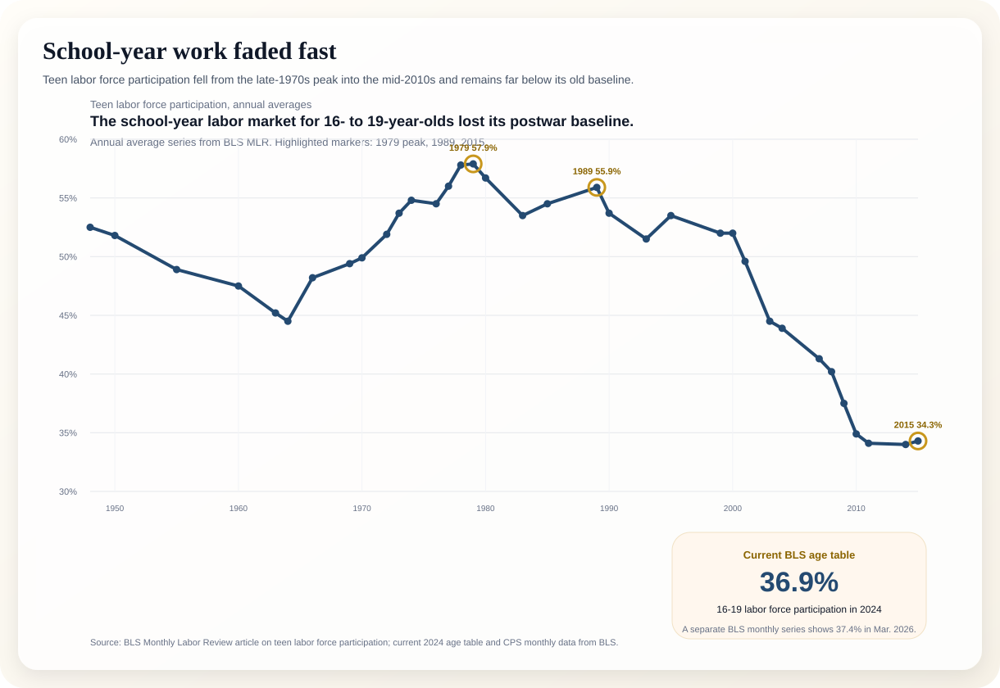
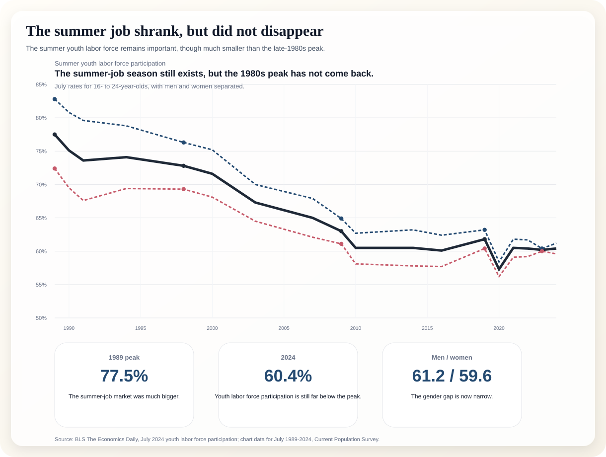
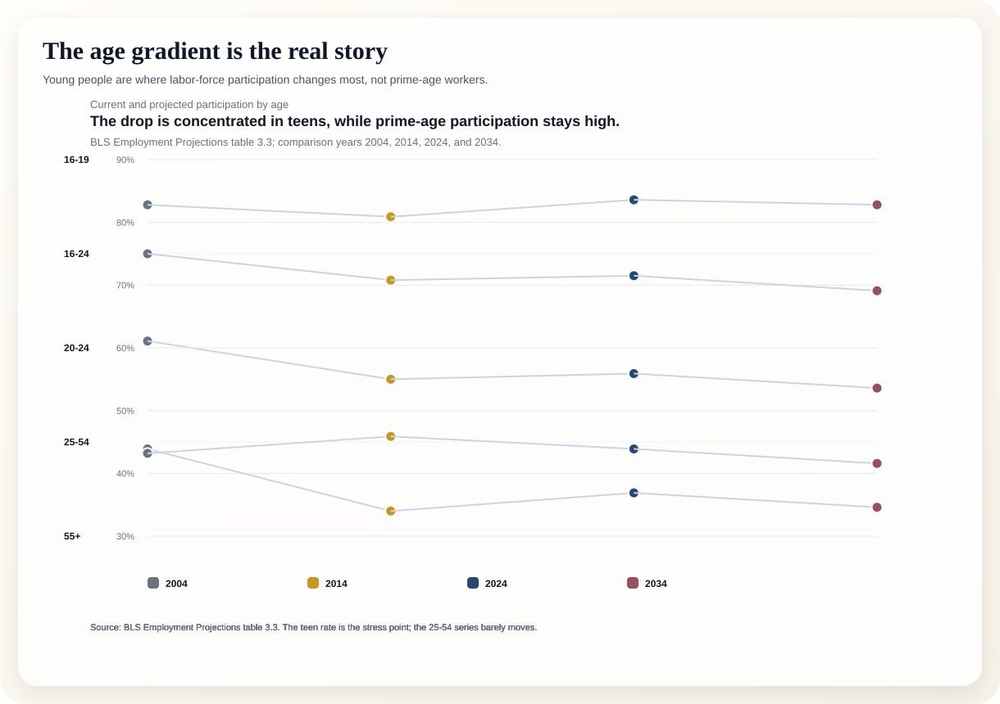
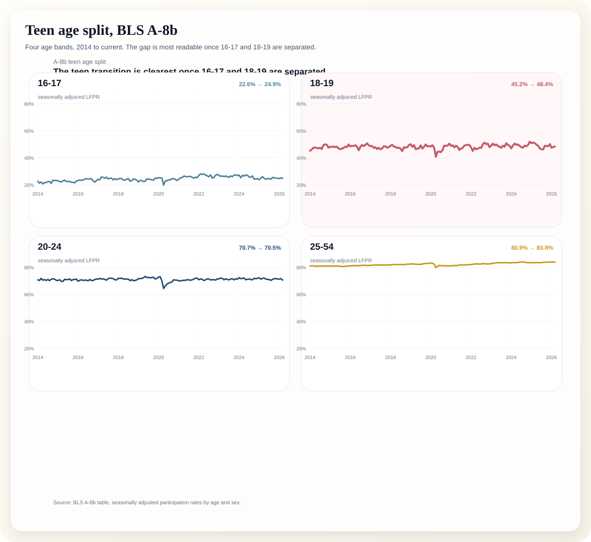

The central fact is simple: teen and youth participation in work fell hard after the 1970s and 1980s. The summer labor market is still there, but it is no longer the giant rite of passage it once was.
“Teen labor force participation has been on a long-term downward trend.” That BLS framing is useful because it is plain, measurable, and conservative.
This line shows the long decline from the postwar baseline to the mid-2010s. The highlighted points are the ones a journalist can quote without hedging.

July rates for 16- to 24-year-olds, with men and women separated.

The 16-19 series is the stress point; 25-54 is almost flat by comparison.

This is the tighter bridge chart: it separates 16-17, 18-19, 20-24, and 25-54 across a longer historical run so the teen transition is easier to see.

Use these lines directly in the story pitch or in the eventual article.